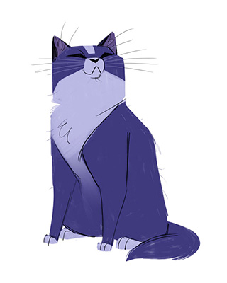
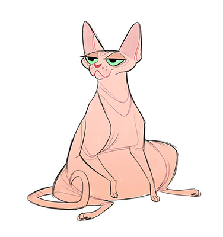

Cat Care
Un espacio sobre el cuidado de tus gatos.
Cat Care
Un espacio sobre el cuidado de tus gatos.
Cuidados de un gato
Veterinario
Comida
Higiene
Sobrepeso
Los gatos obesos pueden ser muy lindos, pero es uno de los principales problemas de los felinos. Está asociado con la alimentación, y su desbalance puede generar una condición inflamatoria que a su vez genere enfermedades secundarias,como problemas osteoarticulares o renales.
Visita médica
Contrario de lo que se cree, los gatos no deben ser llevados al veterinario únicamente cuando se enferman. Los mininos necesitan de vacunas anuales, además de revisión cada 6 meses, desparasitación y esterilización.
Cepillado
Es verdad que los gatos son animales higiénicos que se lavan solos. Sin embargo, eso o significa que no debamos cepillarlos frecuentemente para eliminar el pelo muerto y evitar la formación de bolas de pelo.
Actividad física
Los gatos son activos por naturaleza, y mantener una actividad física diaria es parte del cuidado esencial. Tener rascadores y juguetes alrededor puede además disminuir su estrés.
Atención
Es importante estar atentos ante cualquier cambio de comportamiento, si deja de comer, si no socializa como siempre, si no se acicala. Un simple mal aliento puede significar enfermedades, de manera que conocer a tu gato es esencial y saber cuándo acudir al veterinario.
Caja de arena
Hay diversos tipos de arena, por eso es importante identificar qué tipo de arena y arenero le gusta a tu gato. Al igual que mantenerlo limpio y ordenado.
Hidratación
Nunca se debe dejar al felino con su bebedero vacío o con agua sucia, ya que una deshidratación del 10% puede traer graves consecuencias.
Piel
La piel de un gato debe ser de color rosa o negro según los pigmentos naturales, además su pelaje debe ser espeso y sin protuberancias. Se debe estar alerta en caso de costras, enrojecimientos o casos parecidos a la caspa.
